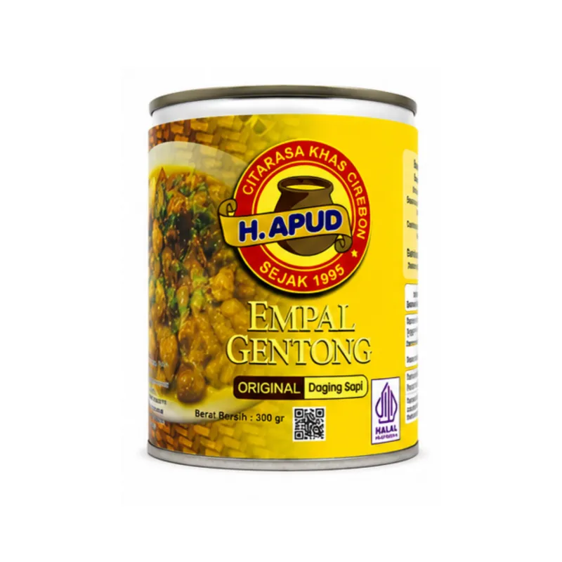
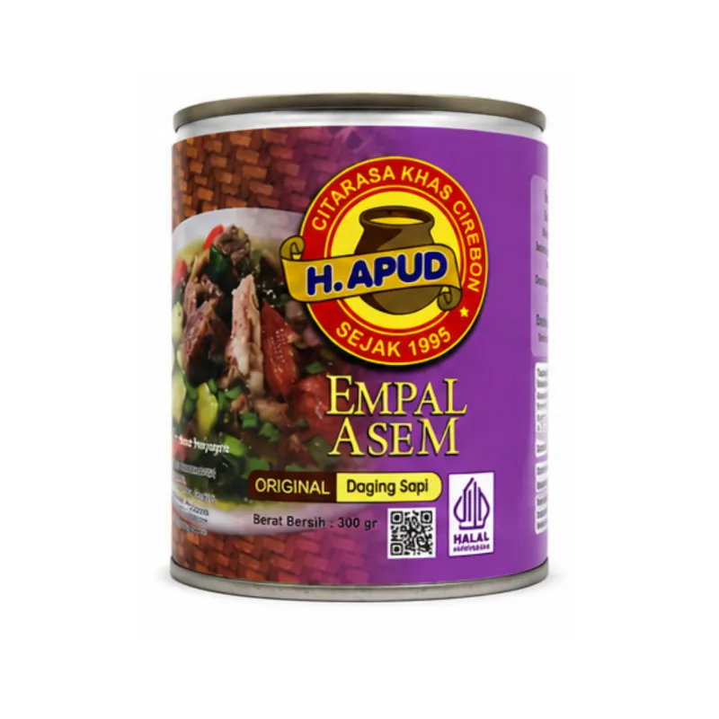
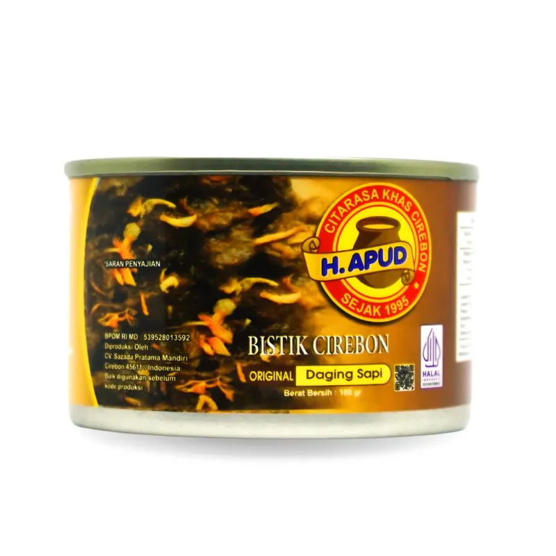
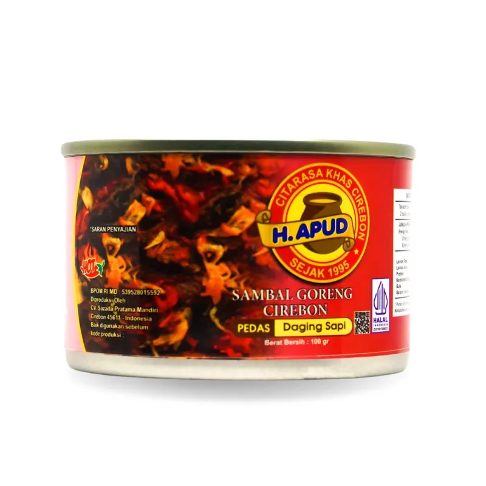

300 gEmpal Gentong Original
Daging sapi dengan kuah kental berbumbu rempah.
Rp40.000
Legenda kuliner Cirebon, kini bisa dibawa ke mana saja. Empal gentong Haji Apud dirintis H. Machfud (H. Apud) dan dimasak secara tradisional dengan kayu bakar, kini tersedia dalam kemasan kaleng siap saji.

Tiga hal yang tercantum pada informasi resmi mitra tentang produk kemasannya.
Menurut website resmi Haji Apud, produk dibuat dengan rempah asli tanpa pengawet buatan.
Proses sterilisasi suhu tinggi pada kemasan kaleng membuat produk dapat disimpan lebih lama. Periksa tanggal kedaluwarsa pada label.
Pesan lewat Shopee atau WhatsApp, lalu produk dikirim dengan ekspedisi ke alamat Anda.
Empat produk kemasan Haji Apud. Harga resmi Rp40.000 per produk. Harga dapat berubah, jadi cek halaman toko saat memesan.

300 gDaging sapi dengan kuah kental berbumbu rempah.
Rp40.000

300 gCita rasa asam pedas yang segar dengan kuah rempah.
Rp40.000

100 gHidangan khas Cirebon dalam kemasan praktis.
Rp40.000

100 gSambal goreng khas Cirebon dengan rasa pedas.
Rp40.000
Haji Apud dirintis oleh H. Machfud, yang dikenal sebagai H. Apud, dengan mempertahankan cita rasa tradisional melalui pengolahan menggunakan kayu bakar. Selain disajikan langsung di gerai, empal gentong kini juga hadir dalam bentuk kaleng agar dapat dinikmati di luar Cirebon.
Di gerai Haji Apud tersedia menu segar untuk makan di tempat atau dibawa pulang, antara lain Empal Gentong, Empal Asem, dan Sate Kambing Khas Cirebon.
Ringkasan dari pengamatan toko Shopee EMPAL GENTONG H.APUD pada 29 Oktober 2026.
Ulasan pembeli menyoroti rasa, kualitas kemasan, masa kedaluwarsa, dan proses pengiriman. Pembeli berasal dari Cirebon dan luar daerah, antara lain Tangerang, Jakarta, hingga Biak, Papua. Ada pula masukan bahwa jumlah daging terasa relatif sedikit; karena itu kami menyarankan membaca deskripsi, berat bersih, dan foto isi produk di halaman Shopee sebelum memesan.
Mengenal empal gentong, proses kayu bakar, dan perbedaannya dengan empal asem.
Mengenal bumbu dan rempah, serta cara menikmati versi kaleng.
Pesan lewat Shopee atau tanyakan dulu lewat WhatsApp.